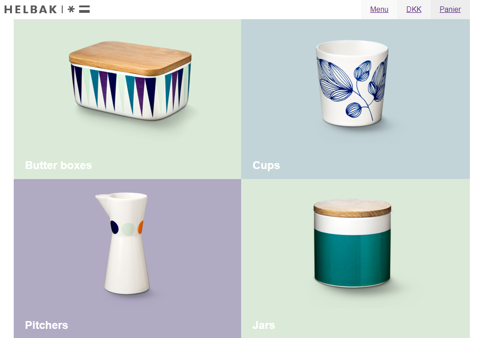
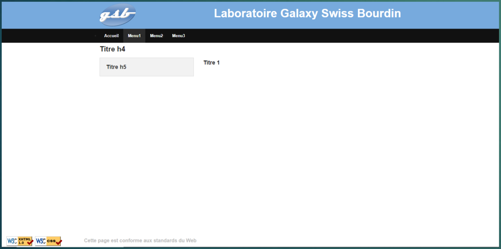
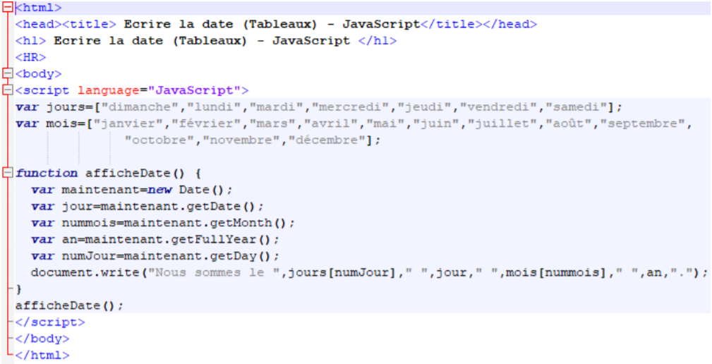
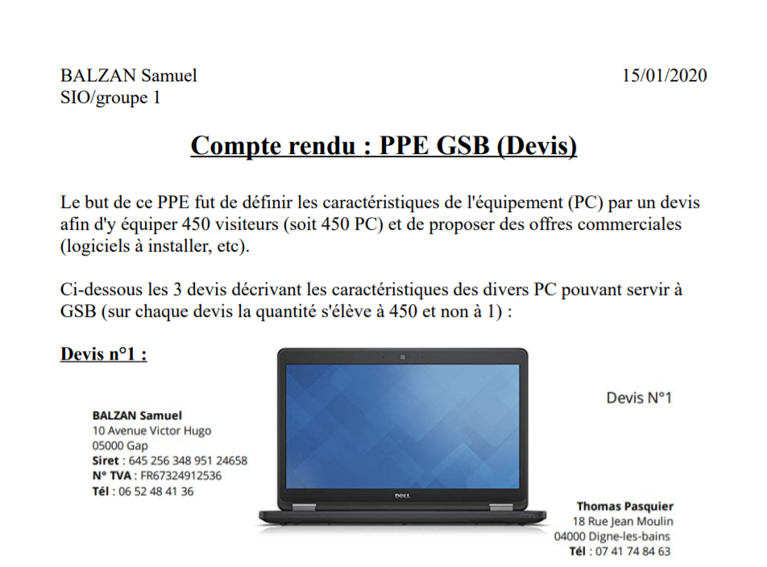

PPE - Exercice CSS Helbak
Le but de ce TP fut de reproduire l'apparence d'une version simplifiée de la
page d'accueil d'un site de vente de céramiques nommé « HELBAK » afin
d'obtenir un rendu le plus proche possible du modèle tout en modifiant
uniquement le .css et sans toucher le HTML.

Veuillez trouver le compte rendu de ce devoir en cliquant ici.
Veuillez également trouver le site que j'ai codé en cliquant sur ce lien.
PPE - Maquettage site web vitrine GSB
Le but de ce TP fut d'améliorer le site du
Laboratoire Galaxy Swiss Bourdin (GSB) afin que celle-ci puisse se comparer à la qualité des
sites de ses concurrents.
Pour se faire, nous avons dû partir d'une page html vide avec trés peu de contenus tout en utilisant le HTML et le CSS comme bon nous semble.

Veuillez trouver le compte rendu de ce devoir en cliquant ici.
PPE - Exercices Javascript
Le but de cet activité fut de réaliser plusieurs exercices afin de savoir bien maîtriser le
Javascript.

Veuillez trouver le compte rendu de ce devoir en cliquant ici.
PPE - Compte rendu GSB (Devis)
Le but de ce PPE fut de définir les caractéristiques de l'équipement (PC) par un devis
afin d'y équiper 450 visiteurs (soit 450 PC) et de proposer des offres commerciales
(logiciels à installer, etc).

Veuillez trouver le compte rendu de ce devoir en cliquant ici.